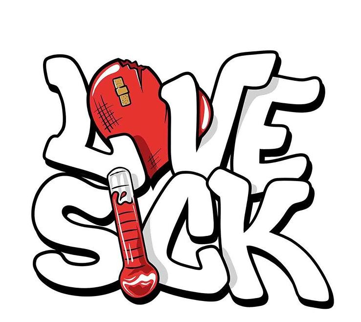

Love Hurts

This piece was one of my more creative drawings. I've always loved to do grafitti-styled writing so I came up with the idea of implementing drawings with the words. The word "love" gives people a mental image of a heart so I used it for that, while the word "sick" could make some think of a thermometer. I was able to do this using a mix of Adobe Illustrator and Photoshop.
Home